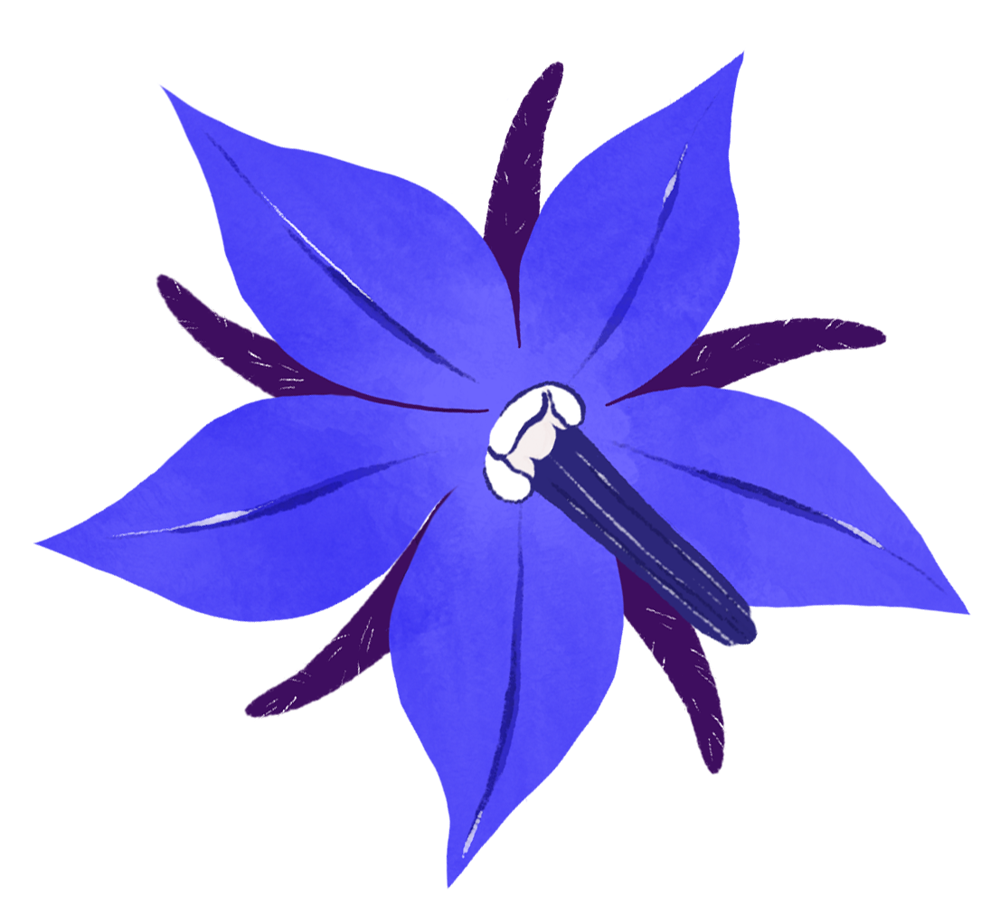
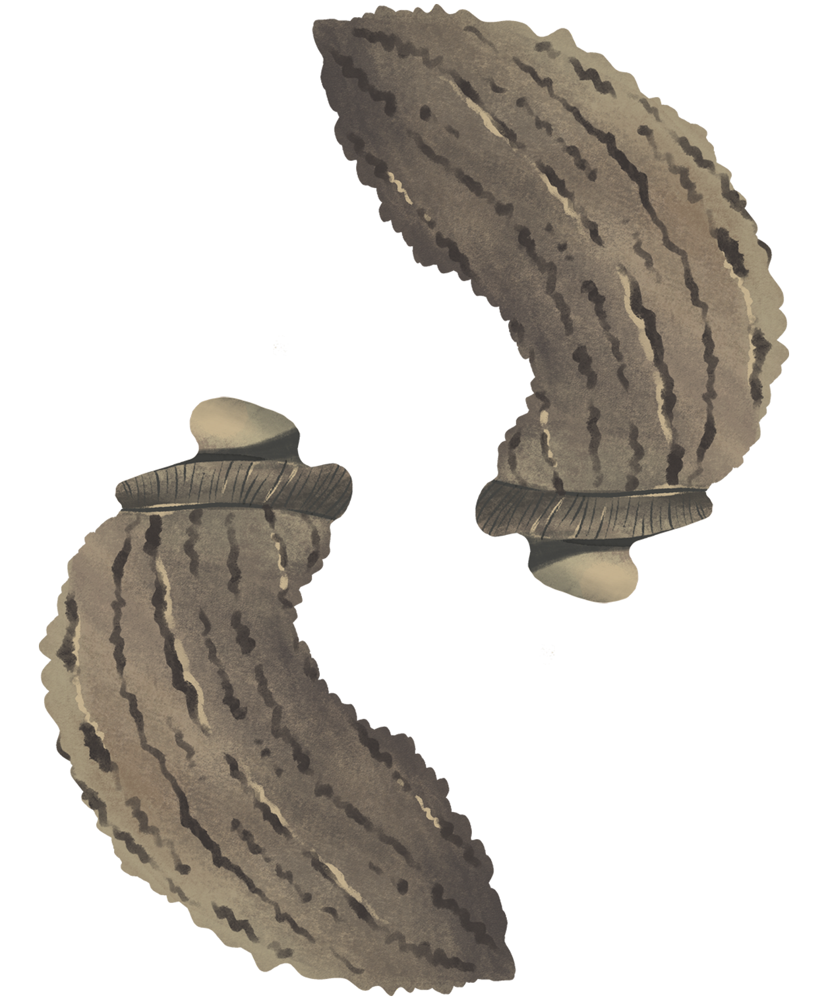

ASPARAGO
Asparagus acutifolius
Asparagacee
MORFOLOGIA
Pianta sempreverde perenne alta anche 2 m, dal fusto rigido e rampicante con germogli laterali legnosi e getti primaverili (chiamati turioni) conosciuti molto come 'asparagi'. Le foglie sono minuscole e spinose, i fiori hanno 6 petali e la sua bacca è tossica, con 1-3 semi interni.
HABITAT
È diffuso ovunque in Italia, con più frequenza lungo le coste. Cresce molto bene tra muretti a secco, campi incolti e ruderi, oltre a boschi.
CUCINA
I giovani germogli succulenti, sottili e verdi vanno raccolti in primavera e gustati al vapore, in creme, omelette, risotti, paste e torte salate.

